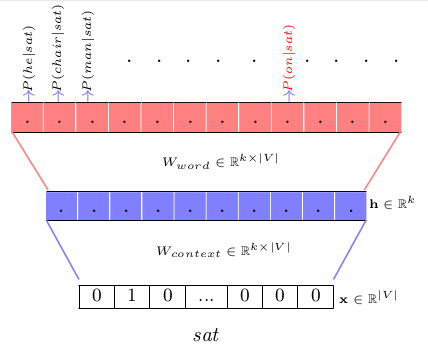

This is the study note after finishing Introduction to Machine Learning from Duke University
It covers a wide range of topics from:
- Logistic Regression/ Multilayer Perceptron
- Convolutional Neural Network on Images
- Recurrent Neural Network on NLP
- Reinforcement Learning
Logistic Regression
In machine learning, our goal is to learn a model which is capable of predicting the outcomes from given observations. For simple classification problem, we can start from logistic regression: \(logit(Y) = X\beta\). The model is characterized by its parameter \(\beta\). Recall from Generalized Linear Model, logistic regression is a specialization for \(E(Y) = \mu = g^{-1}(X\beta)\) where g is the logistic function: \(g(x) = \frac{exp(x)}{1+exp(x)}\). It is still a linear model based on the liner predictors \(X\beta\). Feed the design matrix \(X\) into the logistic regression, we will obtain \(P(Y|X)\), the probability that event \(Y\) will occur conditional on input \(X\), which is range from 0 to 1. Each element in \(\beta\) represents how important each fearture of a observation is. By estimating/learning the parameters \(\beta\), we mapped our observations \(X\) into outcome \(Y\).
In machine learning settings, the logistic function is named as sigmoid function (for binary classification problem, softmax for multi-class classification problem). This is really the starting point to understand machine learning, given a set of obersrvations \(X\) and outcomes \(Y\), we would like to learn the parameters of our model so the predictions are consistent with the training data.
{kind=link}
Multilayer Perceptron
MLP is a natural extension for logistic regression on more complex problem. Instead apply the sigmoid function for only one time for the linear fit, MLP impose the same operation k times. That is, k neurons will be generated and become the input of next layer. Instead of 1 filter vector(\(\beta\)), k filter vectors(\(\beta_{1}, \beta_{2},...,\beta_{k}\)) are used.
{kind=link}
Mathematically, a 3-layer perceptron could be defined as:
Observations: \(X_{1\times p}\)
Layer 1 Filters: \(\beta= \{\beta_1, \beta_2,..., \beta_k\}_{p \times k}\)
Layer 2 Filters: \(\mathbb{c}_{k\times 1}\)
\[ E(Y) = \mu = g^{-1}(g^{-1}(X\beta)\mathbb{c}) \]
{kind=link}
Convolutional Neural Network
Convolutional Neural Network is mostly used in image recognition. It takes in image matrices of the form(\(height \times width \times channel\)) and process them into some low-dimensional features through a series of parametric functions(layers). With a deep neural network, it is capable to learn from some fundamental motif structure(similar to how neurons in cortex sense an object) to very complex components in image. Convolutional Neural Network has a general structure showed below.
{kind=link}
Convolutional layers
By learning meaningful features of these images, it is equivalent to saying learning parameters in the filters. Filter is used in each convolutional layer to generate feature maps and then those feature maps are stacked and pooled and input to next layer. Size, Stride and number of filters are arbitrary. Generally, filter size determines how many information is grabbed in one feature map and number of filters determine how many features is captured. Usually color images would have 3 channels representing RGB. To match the dimension, filers ought to have the same number of channels, for example a \(5\times5\times3\) filter. To control the actual size of the feature map, 0 padding is often applied to the input image. Given \(k\) filters, \(k\) feature maps are generated and stacked up. So the results of a 3D image after convolution is still a 3D array.
{kind=link}
Activation functions
For any deep learning neural network to be powerful, non-linear relationship should be considered, a classic example for this is XOR(exclusive or). This course mainly uses two activation function: RELU and hyperbolic tangent. Relu is extensively used in Convolutional Neuron Network, it is applied to the element-wise outcome from the convolution operation before it going into next layer.
{kind=link}
Pooling layers
After convolution, in order to reduce the dimensionality, a pooling layer comes into place. It enables us to reduce the number of parameters, which shortens the training time as well as combats overfitting. It can be viewed as a downsampling approach that shrink the width and height for each feature map. The most often used pooling function is max pooling, similarly the size of the pooling frame and the stride both need to be defined. Another widely used pooling function is mean pooling. For instance, a \(16 \times 16 \times 20\) stacked feature map after pooling with a \(2\times2\) window by stride \(2\) will have a size of \(8\times8\times20\). Typically in CNN architecture, convolution is done with a \(3\times3\) window and stride 1 with padding, while pooling in done with a \(2\times2\) window and stride 2 without padding.
Fully connect layers
The final sets of layers is couple of fully-connected layers. They serve to flatten the multi-dimensional output into a vector and match the final number of labels. The fully-connected part goes through its own backpropagation process to estimate weights. Finally it produces a probability vectors(sum up to 1) and choose the label corresponding to the highest unit.

Recurrent Neural Network
Recurrent Neural Network is a sequential of neural networks specifically useful in text analysis a.k.a Natural Language Processing. In a general neural network setting, each input is independent from others, however many times it may not be true in a real life scenario because data like stock price or text occur in a sequential manner, in other words, they have context. RNN with a characteristic of memory which enables to take previous output as the new input into subsequent tasks.
Word2Vec
Before introducing the architecture of RNN for NLP tasks, word vectors is imperative to mention. In order to analysis text contents using mathematical model, one has to convert words into numbers, typically a N-dimensional vector. Words of this presence become comparable in terms of their geographical location in the multi-dimensional space. Mapping word to vectors is called word embeddings and such methods sometimes are also called Word2Vec. A codebook is present for one to one mapping between words and numerical vectors.
In order to learn the word codebook, one could use a corpus collection to train parameters in a feed-forward neural network to get vector representations. In the paper above it describes two models, Continuous Bag of Words and Skip Gram.
 Take a Bigram Continuous Bag of Words as an example (though in practice we are usually given multiple context words):
{kind=link}
The aim is to predict the probability distribution \(P(w_{target}|w_{context})\) over \(V\) classes as a multi-classification problem. Given the input word is one-hot encoded, the hidden unit is exactly one row of the weight matrix after multiplication. So the weight parameters are being represented as word representation in a neural network architecture. Stochastic Gradient Descent can be used update the parameters. The posterior distribution can be written as \[ P(w_t|w_c) = \frac{exp(u_c\cdot v_t)}{\sum_{t^{'} \in V}{}exp(u_c\cdot v_{t^{'}})}\] \(u_c\) is the corresponding row in input-hidden weight matrix for \(w_c\), \(v_t\) is the corresponding row in the hidden-output row weight matrix for \(w_t\). The update rule can be expressed as \[v_t = v_t - \eta \frac{\mathcal{L}(\theta)}{\Delta v_t} = v_t + \eta (1 - P(w_t|w_c)) \]
given the loss function is \(\mathcal{L}(\theta) = -log(P(w_t|w_c))\)
The Word2Vec paper and this post explain the mathematical derivation and concepts in more details.
By training the model with plenty of corpus, a vector representation of vocabulary is built and can be used for more complex semantic tasks.
Architecture
The Architecture of a Recurrent Neural Network is a series of neural network sequentially set up. That is saying given a single word \(n-1\) from a sentence, the model will predict the next word \(n\) sequentially. RNNs can be briefly divided into 4 categories: one to one, one to many, many to one and many to many. This is thanks to the feature of RNN which allows results to be output at each stage. RNN also provides additional advantage of sharing features learned across different position of the sequence.
{kind=link}
{kind=link}
The structural difference for RNN is that it passes out a hidden vector and then concatenate with the output of last processor as the new input to the next processor. Which deliver the context of previous text into the next round of prediction. The graphical representation is always more intuitive when it comes to the concept of deep learning architecture.
{kind=link}
The hidden vector is the product of the first weight matrix and the input. Mathematically it can be written as: $ h_n = f(WX_{n-1} + b)$, the activation function for hidden vector is usually the hyperbolic tangent, which leads to an important and widely used variant of RNN, the Long Short Term Memory(LSTM).
Long Short Term Memory
It is not always useful to memorize all the past information, it depends largely on the task itself. Sometimes, we only need to look at recent information to perform the present task. For example, consider a language model trying to predict the next word based on the previous ones. If we are trying to predict the last word in “the clouds are in the sky,” we don’t need any further context. But there are also cases where we need more context. Consider trying to predict the last word in the text “I grew up in France… I speak fluent French.” Recent information suggests that the next word is probably the name of a language, but if we want to narrow down which language, we need the context of France, from further back. LSTMs are explicitly designed to handle long term dependency problems.
Like typical Recurrent Neural Network, LSTMs also have chain like structure, but the repeating module has a different structure. There are four neural network layers interactiong in a very special way:
- forgetting gate layer: \(f_n = \sigma(W_f \times [h_{n-1}, x_n] + b_f)\)
- input gate layer: \(i_n = \sigma(W_i \times [h_{n-1}, x_n] + b_i)\)
- Memory cells: \(\tilde{C_n} = tanh(W_C \times [h_{n-1},x_n] + b_C)\)
- Output control: \(o_n = \sigma(W_o \times [h_{n-1}, x_n] + b_o)\)
Conceptually there are two process going on. One is for the hidden vector update and the other is for memory cells update.
- \(C_n = f_n \odot C_{n-1} + i_n \odot \tilde{C_n}\)
- \(h_n = o_n \odot tanh(C_n)\)
{kind=link}
Reference:
4. Reinforcement Learning
Reinforcement learning is designed to provide an optimal policy for a task by assigning a score for each status. Mathematically, a RL problem can be seen as a Markov Decision Process. This process is memoryless, so everything we care about we know through the current state. The goal of reinforcement learning the optimal policy which requires:
- Maximize the average rewards over times
- Should account for outcome and the cost
- Should be non-myopic. Think ahead and look at long run.
- Typically weights impacts in the near-term more highly than what happens in the long run
The RL setup can be visualized like this:

A task can be viewed as a composition of these steps:
$ Action: A = {a_1,a_2, ..., a_n}$
\(Status: S = {s_1, s_2, ..., s_n}\)
\(Rewards: r(s,a,s^{'})\)
if \(s^{'} > s\), then \(r(s,a,s^{'})\) should be high. To establish a rubric, a matrix for pair of actions and status can be learned empirically and then be updated. This process is named Q-Learning.
Updating formula: \[Q^{new}(s,a) = Q^{old}(s,a) + \alpha \cdot \underbrace{[r(s,a,s^{'}) - Q^{old}(s,a)]}_\text{Temporary Difference}\]
\(\alpha\) is the learning rate which falls between 0 and 1. If rewards for new state \(s^{'}\) is larger than \(Q_old\), then increase the value of \(Q_new\) and vice versa.
However this formula only accounts for immediate rewards so likely to be myopic.
Non-myopic updates
An extension of the previous Q-Learning is introduced to consider long-term benefits:
\[ Q^{new}(s,a) = (1-\alpha)\cdot Q^{old}(s,a) +\alpha \cdot \underbrace{[r(s,a,s^{'}) + \gamma \cdot \max_{\alpha^{'}}Q^{old}(s^{'},a^{'})]}_\text{Non myopic temporary difference}\]
The maximization part of the formula is expected reward (long term effect) and \(\gamma\) is called discount factor, valued between 0(immediate) and 1(long run). If the composite reward is larger than \(Q^{old}\), taking action \(\alpha\) is more valuable.
After the Q table is trained, the optimal policy is defined as \(\pi(a;s) = \operatorname*{argmax}_{a}Q(s,a)\)
Exploration and Exploitation
The process of Q-Leaning learns state, action. reward sequentially. One way to decide the next action is to explore options other than the current optimal action, that is because the Q function is heavily depend on the past experience and thus could be biased. Another way is to exploit by always choosing the current optimal policy. A approach that combines these two strategies is called \(\epsilon-Greedy\). With a small probability \(\epsilon\), one will take next action at random while to exploit with probability\(1-\epsilon\).
Deep Q-Learning
There are limitations for tabular Q-learning:
Assumes all of the states and actions are stored in a matrix
No capacity to generalize across environment types
{kind=link}
In deep Q learning no tabular assumption is made. One wish to learn the parameter through minimizing cost function \[U(\theta;s^{'},a^{'}) = \frac{1}{2}[Q(s,a;\theta) -[r_t + \gamma \cdot \max_{a}Q(s^{'},a^{'};\theta^{old})]]^2\]
{kind=link}
Through gradient decent, \(\theta\) can be optimized through \(\theta^{new} \leftarrow \theta^{old} - \alpha \cdot \Delta_{\theta}U(\theta; s,a)_{|\theta =\theta^{old} }\). If expand the gradient of U, it is obvious to write that the learning process is very similar to what we have in the tabular Q-Learning:
\[\theta^{new} \leftarrow \theta^{old} - \alpha \cdot[Q(s,a;\theta^{old}) - r_t - \gamma\cdot \max_{a^{'}}Q(s^{'}_{t+1}, a^{'};\theta^{old})]\Delta_{\theta}Q(s,a;\theta)_{|\theta =\theta^{old}}\]
Link DQN with Q learning
In the last lecture of the course, it is shown that updating parameters in Deep Q Learning is exactly the same format as updating Q function in Q Learning using Taylor Expansion.
{kind=link}
{kind=link}
----Words at the end----
This course covers some very popular but fundamental concepts in deep learning, though it does not give solid explanation for mathematical derivation but it is a good guidance for those who are new to deep learning models.